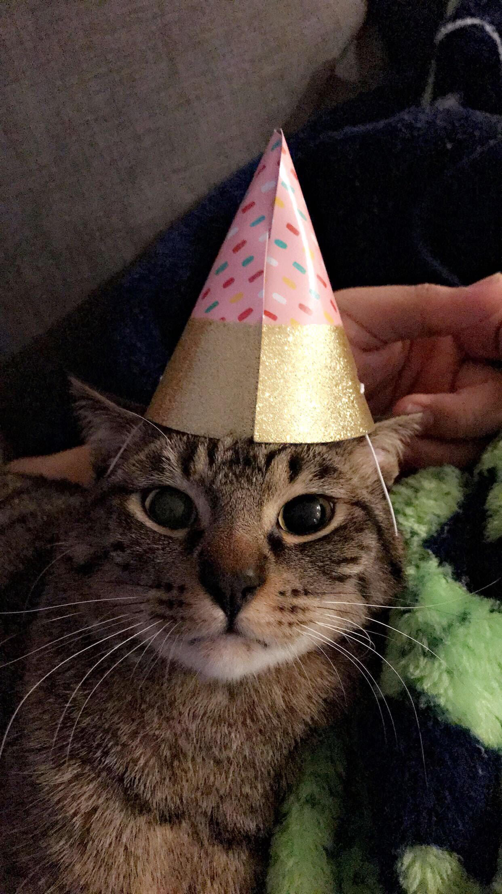

Alphonse
Alphonse, the more timid of the two, is the younger brother. Although he is the timid one, he is the most vocal. He is the one who instigates all the meowing when they know it is time for them to eat. He does not as cuddly as Edward, but when he does, it is a definite sign of his affection.
Edward
The alpha cat. Edward's favorite activity is showing his dominance over his younger brother in any scuffle they get into. Although he may not start their skirmishes, he definitely finishes them with pinning his brother down any chance he gets. Edward likes to cuddle with anyone and will purr loudly when he's petted.
Funfacts:
- Their favorite food is tuna and cheese
- Their favorite activity is sleeping and eating
- Their birthday is April 8th
Rules when around the brothers:
- Always pet them when they approach you
- Never take their food away from them
- Have fun